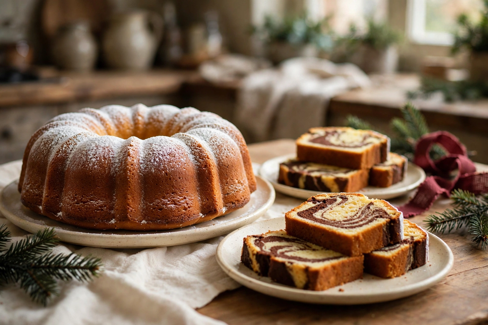
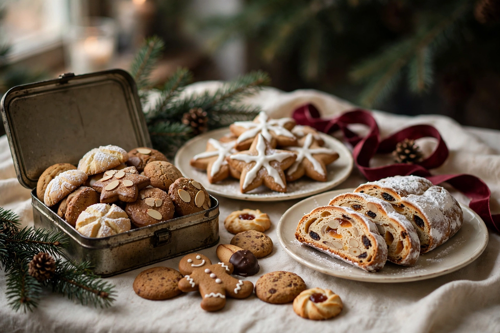
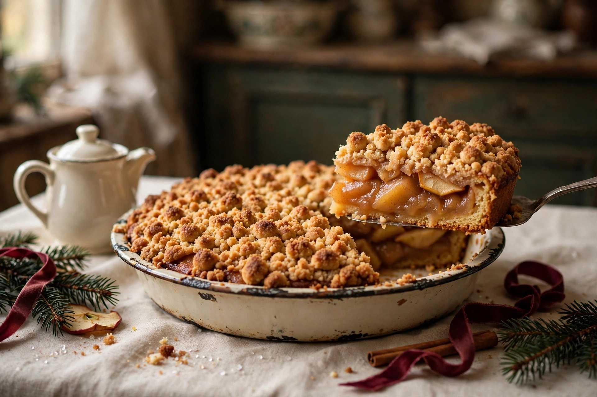
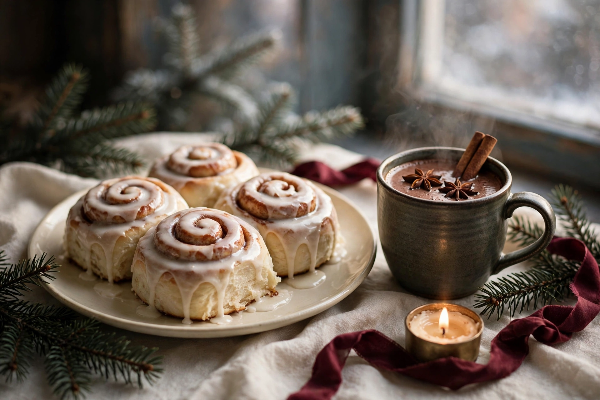
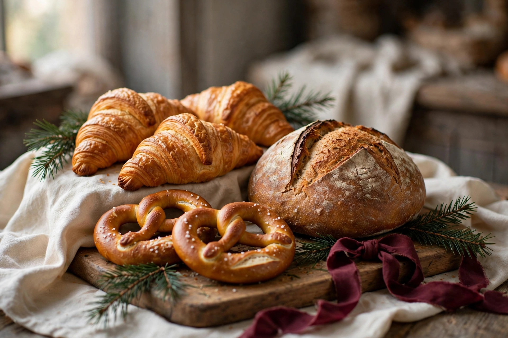
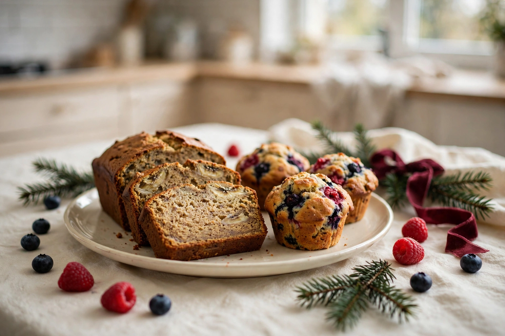

Home › Cookbooks
Before there were blogs, the best recipes lived in baking books. These six books accompany Anna in her kitchen – from the almost 100-year-old classic to the book on vegan baking. Each one was chosen because it truly helps in practice.

Dr. Oetker · Dr. Oetker Verlag
The classic since 1930 · over 400 recipes
The baking book that already stood in Grandma's kitchen: over 400 sweet and savory recipes with the Dr. Oetker test kitchen's promise of success. When Anna is unsure about a classic, she looks here first.
View on Amazon →
Dr. Oetker · Dr. Oetker Verlag
192 pages · around 120 recipes
From classic cookies to Lebkuchen and Stollen to sweet gifts from the kitchen: this book accompanies you through the whole Advent season. For everyone who, like Anna, would love to bake every day in December.
View on Amazon →
Dr. Oetker · Dr. Oetker Verlag
The most popular classics from Grandma's bakery
Exactly the recipes this blog exists for: proven classics, the way they used to be baked in every family. Anna's tip for everyone who loves Vanillekipferl & co. as much as she does.
View on Amazon →
Theresa Knipschild · ZS Verlag
176 pages · over 80 recipes
The master confectioner and WDR baking expert shows that winter can do more than cookies: traditional treats and surprising new creations. Lovely for everyone who wants to keep baking after Christmas.
View on Amazon →
Hannes Weber · GU (Gräfe und Unzer)
Cakes, tortes, cookies and bread – the big baking school
A general baking book about cakes, tortes, cookies and bread by a professional. If you really want to understand the basics – why a dough works or does not –, this is the right book.
View on Amazon →
Nicole Just · GU (Gräfe und Unzer)
Vegan cakes, tortes and cookies without egg and butter
The best-known vegan baking book in the German-speaking world. It fits perfectly with our cookies without egg – and proves that baking without egg and butter can taste just as good.
View on Amazon →Advertising: This page contains affiliate links. If you buy through a link on Amazon, we receive a small commission – the price stays the same for you. Thank you for your support!
Anna is working on her first own e-book with her favorite cookie recipes – compact, tested and with all the tips from her kitchen. As soon as it is ready, you will find it right here.
To Anna's cookie recipes